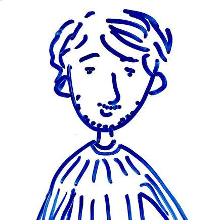

Position: INDElab,
Informatics Institute, Faculty of Science, University of Amsterdam (UvA)
Project:
Knowledge Elicitation for Scientific Data in Hybrid Heterogeneous Teams
Focus: Human-AI & Human-Data Interaction for Scientific Data Reuse
✉︎ d<dot>s<dot>orlov<at>uva<dot>nl
✍︎
Google Scholar
| GitHub
I am a PhD candidate at INDElab,
supervised by Lise Stork,
Davide Dell'Anna
and Paul Groth.
My research project is a part of the
Hybrid Intelligence consortium,
where I focus on human-AI interaction for scientific data description, publication,
and reuse. Specifically, I study collaboration and system patterns in
heterogeneous (more-than-human) teams, to enable rich and contextualized dataset descriptions
for increased reusability.
My core goal is to find and move towards beneficial and respectful ways for humans and
artificial
agents to work together for more broadly reusable scientific datasets.
Bridging Theory and Practice in Semantic Data Science
Dmitrii Orlov, Lise Stork, Nikolay Yakovets and Daphne Miedema.
SEMANTiCS, 2026.
[to appear]
A Cup of ChaiSQL: Benefits of Type Checking for SQL
Dmitrii Orlov, Daphne Miedema and Nikolay Yakovets.
PLATEAU Workshop, 2024.
[link]
Between JIRA and GitHub: ASFBot and its Influence on Human Comments in Issue Trackers
Ambarish Moharil, Dmitrii Orlov,
Samar Jameel, Tristan Trouwen, Nathan Cassee
and Alexander Serebrenik.
MSR: International Conference on Mining Software Repositories, 2022.
[link]
PhD in Computer Science
— University of Amsterdam (2025 - Present)
MSc in Computer Science and Engineering
— Eindhoven University of Technology (2021 - 2024)
Pre-Master in Computer Science and Engineering
— Eindhoven University of Technology (2016 - 2019)
BEng in ICT & Software Engineering
— Fontys University of Applied Sciences (2015 - 2019)
Full Stack Software Engineer - Promaton (2021-2025)
Cloud System Engineer - Satelligence (2019-2021)
Back-End Software Engineer - Studyportals (2017-2019)